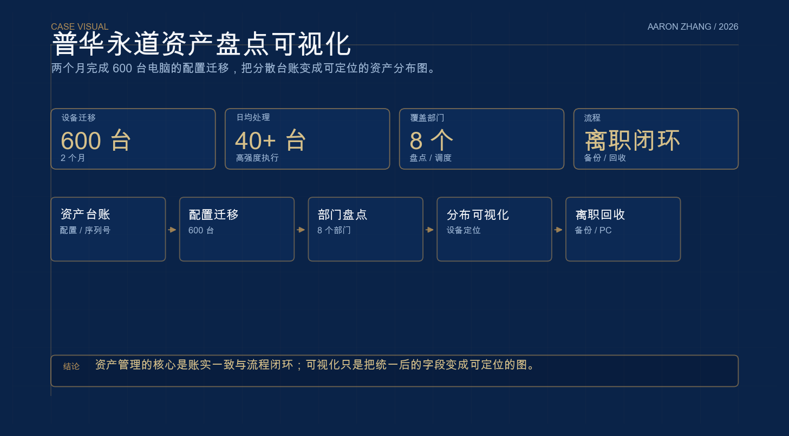

普华永道资产盘点可视化
两个月完成 600 台电脑的配置与数据迁移，把分散的资产台账变成带序列号的分布图。
| 公司 |
普华永道中天会计师事务所 |
| 时间 |
2025.10 – 2025.11 |
| 角色 |
FCS-GTS 部门 · 资产数据管理与可视化 |
| 关键词 |
资产管理 数据可视化 流程设计 Agent 测试 |
背景 / Context
IT 资产管理的难点不在「记账」，而在「账实一致」：
- 电脑分布在多个部门，配置、序列号、使用人信息分散。
- 员工离职时，数据备份和 PC 回收容易遗漏。
- 资产盘点靠人工逐台核对，耗时且容易出错。
我的工作 / What I did
1. 资产台账数据管理
- 负责资产台账数据的采集与维护。
- 两个月累计完成 600 台电脑的配置与数据迁移，日均 40+ 台。
- 建立离职员工数据备份与 PC 回收流程，保障资产数据完整。
2. 资产盘点与可视化
- 协助覆盖 8 个主要部门的资产盘点与调度，日均盘点数十台设备。
- 绘制带序列号的资产分布图，把分散的台账数据转化为可视化看板。
- 让「某台设备在哪、归谁、状态如何」可以被快速定位。
3. Agent 智能体测试
- 参与部门 Agent 智能体的测试，记录问题并反馈。
结果 / Impact
- 两个月完成 600 台电脑配置与迁移，日均 40+ 台。
- 覆盖 8 个部门的资产盘点与调度。
- 建立离职数据备份与 PC 回收流程，减少资产遗漏。
- 资产分布可视化，提升盘点与调度效率。
关键数据 / Key Numbers
| 指标 |
数值 |
口径 |
| 设备迁移 |
600 台 |
两个月 |
| 日均处理 |
40+ 台 |
配置与数据迁移 |
| 覆盖部门 |
8 个 |
资产盘点与调度 |
| 流程 |
离职闭环 |
数据备份 + PC 回收 |

图：资产台账、配置迁移、部门盘点、分布可视化与离职回收的闭环。
结论 / Takeaways
- 资产管理的核心是账实一致：可视化之前，必须先统一配置、序列号、使用人和状态字段。
- 流程闭环比一次性盘点重要：离职备份与 PC 回收是资产最容易漏掉的环节。
- 高强度执行也需要方法：600 台、日均 40+ 台，靠的是批次、清单和异常记录，而不是单纯加班。
可迁移的能力 / What it shows
- 流程意识：资产管理的核心是流程闭环，不是一次性盘点。
- 数据可视化：把台账变成图，前提是先把字段和口径统一。
- 高强度执行：在固定时间窗口内完成大量重复但容错率低的工作。
说明：该项目为实习期间内部项目。以上仅展示问题拆解、方法和个人贡献，不包含客户数据、系统截图或源代码；部分细节已做脱敏和概括处理。